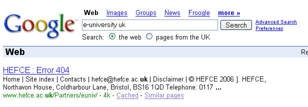

The following has just appeared on the OU intranet News site, which looks like being a really interesting event (I've seen a speaker list, but don't think it's public yet... interesting line up though (more when I can...)):
Monday 5 June 2006, Berrill Lecture Theatre, Walton Hall, 10.30-13.00.The Forum will hear short presentations by thought leaders from Amazon, Nokia and the BBC, amongst others, to help us consider "Towards a Global Online University: Future Scenarios for Delivering Higher Education". An open discussion session will follow.
Your insights and questions are sought on topics including the design of next generation ICT, novel business models for HE in an internetworked world, and trends and advances in pedagogy, both online and offline.
Video-conferencing facilities will be available in the regions and the event will be webcast via Stadium.
If you have OU SAMS access, you can submit questions or comments in advance via a link on the Stadium webpage.
Just in passing, I've been Googling towards global online university site:open.ac.uk for a bit in the hope of posting about this event as soon as it was out there (but hey, it's Friday, and the intranet news site is almost public...), and was amused to get more than a few references to this:
TOWARDS THE GLOBAL E-UNIVERSITY: QUALITY OR MEDIOCRITY?
a talk from December, 2000, by our previous VC, which I think developed some of the ideas introduced briefly in this artcle from March of that year: Towards a Global e-OU.
The UK e-University has of course recently been finally laid to rest. And as it's Friday, I just can't resist not posting this any more:

(We all know what a 404 is, right? When I checked out that Wikipedia link, I couldn't help but chuckle again at the thought that this error code is sometimes returned when a server is configured not to fulfill the request and not reveal the reason why....! And for some reason, politics came to mind;-)
Posted by ajh59 at May 19, 2006 03:38 PM